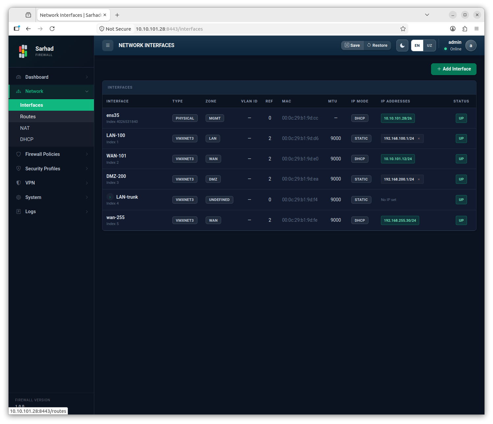
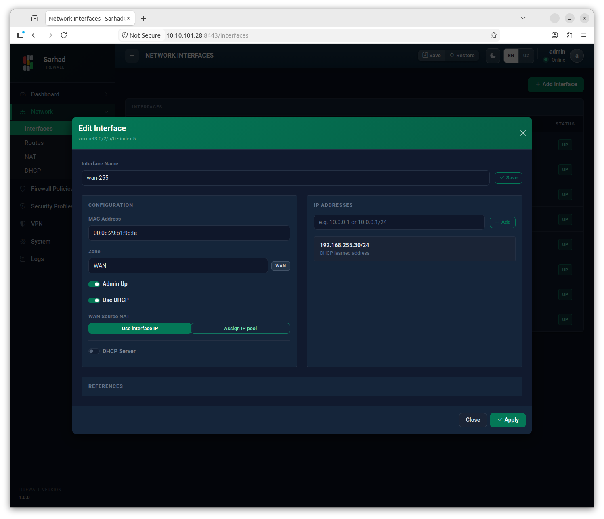

1. Tarmoq interfeyslarini sozlash va boshqarish
Bu bo’limda Sarhad NGFW tizimida tarmoq interfeyslarini ko’rish, sozlash
va boshqarish bo’yicha to’liq qo’llanma keltirilgan. Interfeyslar bo’limiga
o’tish uchun chap menyudagi Network → Interfaces bo’limini tanlang
(/interfaces).
1.1. Umumiy ma’lumot
Sarhad NGFW ikki turdagi tarmoq interfeyslarini boshqaradi:
MGMT (boshqaruv) interfeysi — tizimni boshqarish uchun ajratilgan interfeys. Boshqaruv veb-paneli (
https://<ip>:8443) aynan shu interfeys orqali ochiladi. Bu interfeys himoyalangan: uni ma’lumotlar interfeysiga aylantirib bo’lmaydi, shu sababli boshqaruv aloqasi hech qachon uzilmaydi.Ma’lumotlar interfeyslari — tarmoq trafigini tashuvchi interfeyslar. Tarmoq trafigi aynan shu interfeyslar orqali filtrlanadi, marshrutlanadi va himoyalanadi.
{kind=link}

1.2. Interfeys zonalari (rollari)
Har bir ma’lumotlar interfeysiga zona (rol) tayinlanadi. Zona interfeysning xavfsizlik darajasini va unga avtomatik qo’llaniladigan qoidalarni belgilaydi:
Zona |
Tavsifi |
|---|---|
WAN |
Tashqi (internet) tomonga ulangan interfeys. Eng past ishonch darajasiga ega. Odatda NAT va kiruvchi trafikni cheklash shu interfeysga qo’llaniladi. |
LAN |
Ichki (lokal) tarmoq interfeysi. Yuqori ishonch darajasiga ega ishonchli foydalanuvchilar tarmog’i. |
DMZ |
Demilitarizatsiya zonasi — tashqaridan ko’rinadigan serverlar (veb, pochta) uchun oraliq xavfsizlik zonasi. |
MGMT |
Boshqaruv interfeysi. Faqat tizimni boshqarish uchun ishlatiladi. |
Zonalar o’rtasidagi trafik uchun tizim asosiy ruxsat/taqiq qoidalarini (zone ACL) avtomatik yaratadi. Masalan, LAN’dan WAN’ga chiquvchi trafik odatda ruxsat etiladi, WAN’dan LAN’ga kiruvchi trafik esa standart holatda bloklanadi.
1.3. Interfeyslar ro’yxatini ko’rish
Interfeyslar sahifasida har bir interfeys uchun quyidagi ma’lumotlar ko’rsatiladi:
Interfeys nomi (masalan,
GigabitEthernet0/8/0) va foydalanuvchi bergan taxallus (alias).Holati: UP (faol) yoki DOWN (o’chiq).
Tayinlangan zona (WAN/LAN/DMZ/MGMT).
IP manzil(lar)i va tarmoq niqobi (subnet mask).
MAC manzili va interfeys turi.
Real vaqtdagi statistika: qabul qilingan (RX) va yuborilgan (TX) baytlar, paketlar va tashlab yuborilgan (drop) paketlar soni.
Statistika har soniyada avtomatik yangilanib turadi.
1.4. Interfeysni sozlash
Interfeysni sozlash uchun ro’yxatdagi kerakli interfeys qatorini ikki marta bosing (double-click) — interfeysning sozlash oynasi ochiladi.
{kind=link}

Sozlash oynasida quyidagi parametrlarni o’zgartirishingiz mumkin:
1.4.1. Zonani tayinlash
Interfeysga WAN, LAN yoki DMZ zonasini tanlang. Zona o’zgarganda tizim shu interfeysga tegishli avtomatik xavfsizlik qoidalarini qaytadan hisoblaydi.
1.4.2. IP manzilni sozlash
Interfeysga manzil ikki usulda beriladi:
Statik IP — qo’lda kiritilgan IP manzil va niqob (masalan,
192.168.10.1/24). Bir interfeysga bir nechta IP manzil qo’shish mumkin.DHCP mijozi (DHCP client) — interfeys manzilni tashqi DHCP serverdan avtomatik oladi. Odatda WAN interfeysi internet-provayderdan manzil olishi uchun ishlatiladi.
IP manzilni kiritib, Saqlash (Save) tugmasini bosing.
1.4.3. Interfeys holatini boshqarish
Interfeysni UP (yoqilgan) yoki DOWN (o’chirilgan) holatiga o’tkazishingiz mumkin. Texnik xizmat ko’rsatish paytida interfeysni vaqtincha o’chirib qo’yish qulay.
1.4.4. Taxallus (alias) berish
Har bir interfeysga eslab qolish oson bo’lgan nom berishingiz mumkin
(masalan, Internet-WAN yoki Ofis-LAN). Bu nom barcha sahifalarda
ko’rsatiladi va tizim qayta ishga tushganidan keyin ham saqlanib qoladi.
1.5. VLAN qo’shish
VLAN (Virtual LAN, 802.1Q) bir fizik interfeysni bir nechta mantiqiy tarmoqqa bo’lish imkonini beradi. VLAN qo’shish uchun VLAN qo’shish (Add VLAN) tugmasini bosing.

Quyidagi maydonlarni to’ldiring:
Asosiy interfeys (Parent interface) — VLAN qaysi fizik interfeys ustida yaratilishini tanlang.
VLAN ID — 1 dan 4094 gacha bo’lgan tartib raqami (masalan,
100).IP manzil — VLAN interfeysining manzili (ixtiyoriy).
VLAN yaratilgach, u alohida interfeys sifatida ro’yxatda paydo bo’ladi va unga zona hamda qoidalar tayinlanishi mumkin.
1.6. Muhim eslatmalar
Note
Boshqaruv (MGMT) interfeysini o’zgartirishda ehtiyot bo’ling. Agar boshqaruv interfeysining IP manzili noto’g’ri o’zgartirilsa, veb-panelga ulanish yo’qolishi mumkin. Bunday holatda fizik konsol (tty1) orqali IP manzilni qayta sozlash kerak bo’ladi.
Tip
Barcha o’zgarishlarni kiritgandan so’ng yuqori paneldagi Konfiguratsiyani saqlash tugmasini bosing — shunda sozlamalar tizim qayta ishga tushganidan keyin ham saqlanib qoladi.